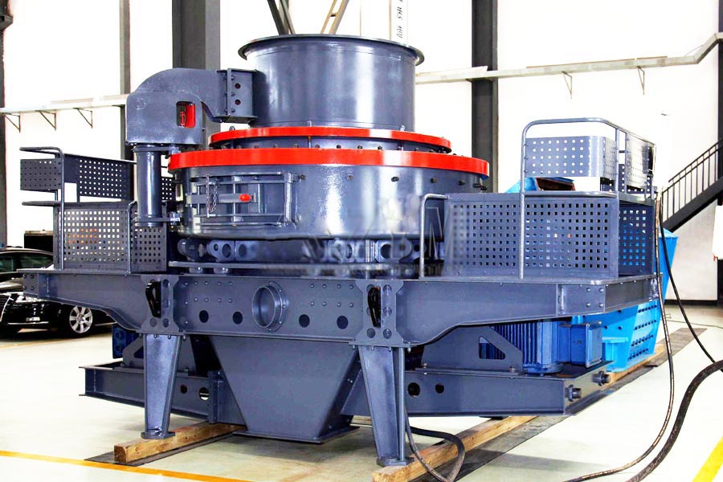
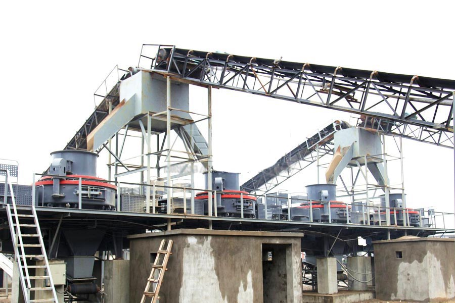

- Home >
- stone crusher >
- artificial sand making machine

Construction waste crushing production line

Mobile construction waste crushing station for urban construction waste crushing.
artificial sand making machine
Sand Making Machine Profile
Sand crushing introduction of Germany advanced technology, through the design and structural improvements, design and manufacture a new generation of efficient crushing machine. Reasonable multi-cavity combination of the crushing chamber, new and convenient dual regulatory agencies, can guarantee the expected size ≤3mm occupy 85%, fine and uniform particle size. Convenient repair and maintenance devices, so that the exchange hammerhead, the sieve is more convenient. Wear parts are manufactured using the new high-quality multi-element high alloy wear-resistant materials to ensure the hammer, lining superior abrasion resistance and impact resistance. The series crusher smooth running low dust, low power consumption, and therefore efficient Crusher PCX series with conventional crusher compared the following significant advantage.

Sand Making Machine Uses
Sand crushing widely used in chemical, building materials, metallurgy, mining, coal preparation sand and refractory industries, limestone, cement clinker, shale, dolomite, granite, gypsum, mixed materials and other materials for efficient hardness crushing.
The device is suitable mechanism system of artificial stone, Sunaba, highway, rail, water, construction, cement, refractories, metallurgy, glass sands and other industries.
Sand Making Machine technical parameters
| Specifications Model | Inlet size（MM） | Feed size(MM) | The particle size(MM) | Discharge slit width adjustment | Cement clinker(T/H) |
Limestone (T/H) |
Motor Power(KW) |
| 800×400 | 400×185 | ＜120 | ＜5 | 5—20 | 20—30 | 35—45 | 37—45 |
| 800×600 | 500×250 | ＜180 | ＜5 | 5—20 | 30—40 | 45—55 | 45—55 |
| 800×800 | 550×330 | ＜180 | ＜5 | 5—20 | 35—45 | 55—65 | 45—55 |
| 1010×1010 | 1000×350 | ＜180 | ＜5 | 5—20 | 45—55 | 65—745 | 55—75 |
| 1200×1000 | 1200×400 | ＜180 | ＜5 | 5—20 | 70—80 | 80—90 | 90—110 |
| 1200×1200 | 1200×450 | ＜180 | ＜5 | 5—20 | 100—110 | 90—100 | 100—132 |
| 1400×1400 | 1500×500 | ＜190 | ＜5 | 5—20 | 100—150 | 100—150 | 160 |
| 1600×1600 | 1600×550 | ＜190 | ＜5 | 5—20 | 170—210 | 190—250 | 250 |
| 1800×1800 | 1800×800 | ＜190 | ＜5 | 5—20 | 250—270 | 280—310 | 315 |

Sand Making Machine Features
1. ultra thin broken: Add granularity adjustment device to ensure that the expected size ≤3mm occupy 85%;
2. Efficiency: In the same yield reduce motor energy consumption by 40%;
3. Long life: ultra-high-alloy modular hammer, it can turn around and use the average life expectancy increased by 4 times;
The crushing ratio: can be clinker one, two, limestone secondary and tertiary crushing, merged into one broken.
Leave Me A Message, Now
If you have any questions regarding equipment prices, production line configuration or other problems, you can send a message to us, we will contact you soon.